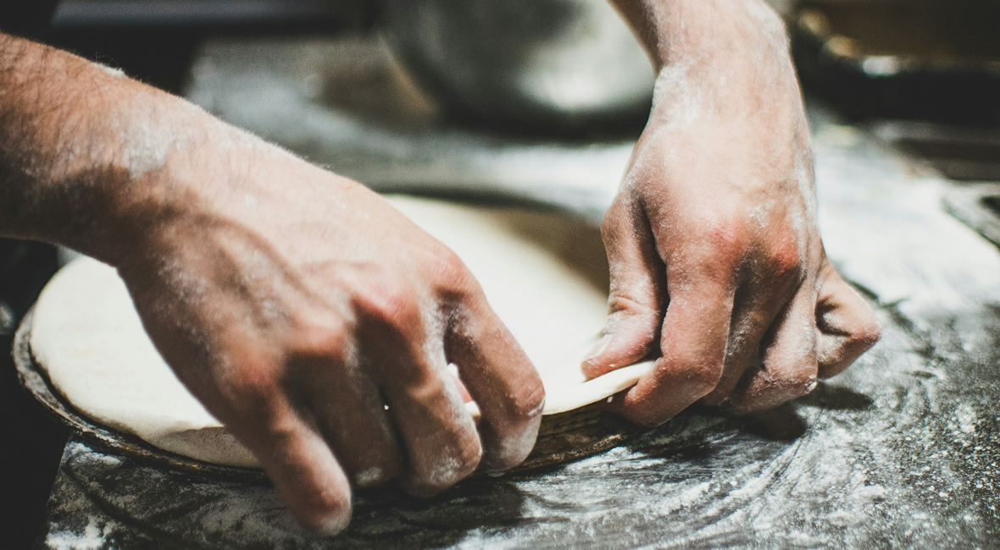
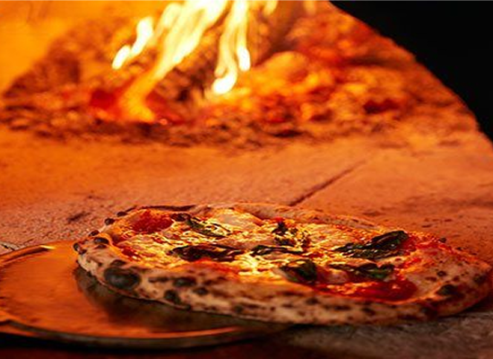
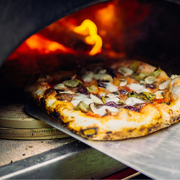
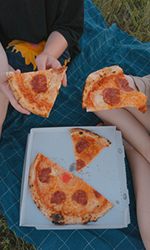
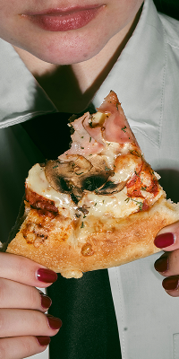
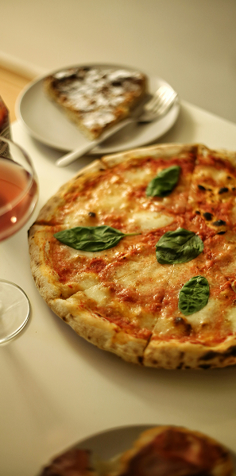

本場イタリアの薪窯で焼く
本格ピッツァ
ナポリから輸入の薪窯ステファノフェラーラ社の 薪窯で焼き上げる、本物のナポリピッツァを提供します。
ステファノフェラーラ社の薪窯の内部は 500度という高温を保つ事が出来、 ピッツァをを約1分30秒で焼き上げられます。
短時間で焼き上げることで、 外はカリッとしていながら中はモチモチしているという、 ナポリピッツァならではの食感を生み出せ、 他では真味わえない、ピッツァをお召しがり下さい。



本場イタリアの味を、そのまま地域へ
生地について
ナポリピッツァ職人協会が正式に認定したピッツァ職人が作る生地。 その日の気温、湿度、小麦粉の状態を見ながら、長年の経験と知識で管理をする他では真似てまきないこだわりの生地作りを行っています。
食材について
ピッツァの主軸となる小麦粉はイタリアNo.1シェアのカプート社の小麦粉です。 チーズ、塩、オリーブオイルなど、ピッツァの主軸となる食材のほとんどが、 本場イタリアから輸入しています。
ピッツァを囲めば、自然と会話が生まれる。
家族と。友人と。商店街のみなさんと。そして、初めて出会う人とも。
Belòは、地域のみなさんが 笑顔でつながる場所を目指しています。
ランチに。仕事帰りに。学校帰りに。家族との夕食に。
一人でも。みんなでも。
気軽に立ち寄れる、 “いつものピザ屋”でありたいと思っています。



ピッツェリア ベーロについて
ベッロとはイタリア語で、美しい！良いね！の意味をしています。 ベーロと伸ばす事で日本語の舌(べろ)とかけ合わせた造形イタリア語です。
伝統的な技法を守りつつも、可愛いらしさやチャーミングさを忘れずに、『ピッツァを食べた時に思わずペロッと舌を出して笑顔になってもらいたい！』 という想いを込めて名前を付けました。
美味しいで繋がる、ピッツェリア。 美味しいピッツァを食べて、お客様の笑顔を、楽しい食事は心を通わせる第一歩。 家族に、地域に、人と人の繋がりのきっかけになる場所になるお店を目指してます。